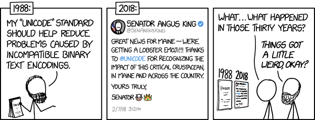

Why?
Unicode
What is Unicode?
Unicode is a character encoding standard.
What is Character Encoding?
It is a mapping between bytes and a character.
100001 ----------------> `a`
So why do we need a standard?
ASCII
A 7 bit system to represent 128 characters
Great for America! Bad for Japanese, Russians, etc.
� � � � � �
Unicode v1: 1991
Launches with 7,161 characters
Unicode v8: potentially 2,164,864
Current mapped? 1,111,998
How does Unicode work?
17 different "planes"
Plane is a continuous group of 65,536 (2^16) code points.
Plane 0: Basic Multilingual Plane (BMP)
Unification of all prior sets (ASCII, Chinese, Japanese, Cyrillic, etc)
The Astral Planes
The informal name for the supplementary planes of Unicode is "astral planes", since (especially in the late '90s) their use seemed to be as remote as the theosophical "great beyond"
<meta charset="utf-8" />
Why Unicode 8? Why not 16? 32?
Unicode 8
Unicode 16
Unicode 32
Wait? You can't do that?
const place = "cafe\u0301";
console.log(place) => "café"
console.log(place.length) => 5
console.log(place.split("")) => ["c", "a", "f", "e", ""]
\u0301 is a combining mark
Modifies what preceeds it
Skin tones
Base on the Fitzpatrick Dermatology scale
🻠🼠🽠🾠ğŸ¿
const scale = ['\u{1F3FC}', '\u{1F3FD}', '\u{1F3FE}', '\u{1F3FF}'];
scale.map((tone) => `👩${tone}`) // => (5) ["👩🏻", "👩🏼", "👩🏽", "👩🏾", "👩🏿"]
Zero Width Joiner (ZWJ)
👩 \u200D 🚀 == ???